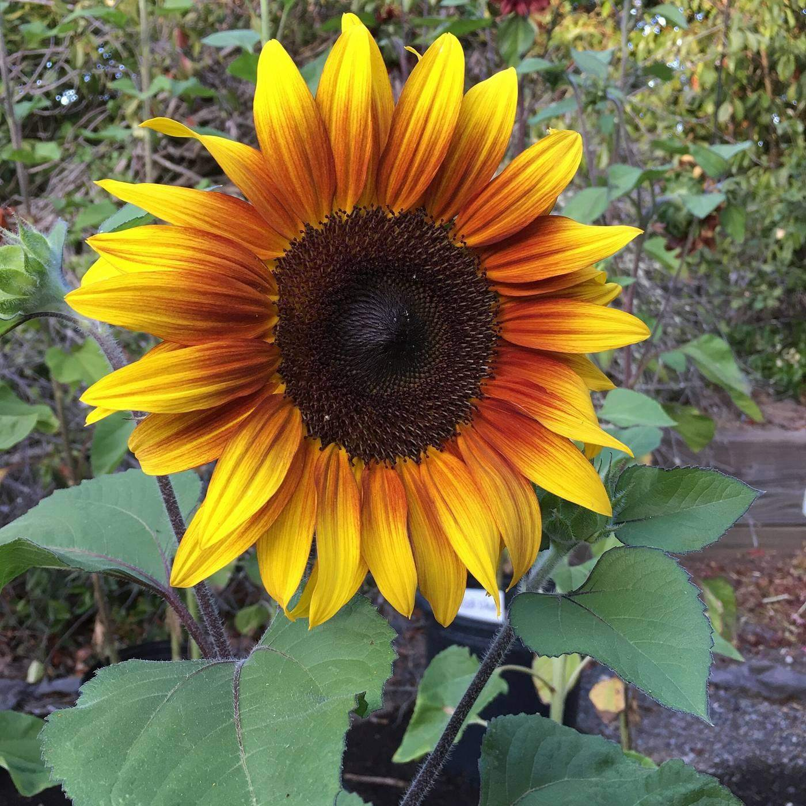

店のこと
ローイングマシンの部位の配置図
お店の詳しい情報は準備中です。ここでは、制作側が考えたデザインの考え方を紹介します。


制作側の連想
番号は、部位の番号
ホームの図にある1〜6の番号は、それぞれローイングマシンの部位の名前に対応します。ローイングマシンの部位を図にしたもので、制作側の連想です。お店の理念・由来とは無関係で、実際の機器の仕様を示すものでもありません。
1ハンドル
両手でにぎって引く、横長の棒の部分。チェーンにつながっている。
2モニター
時間や距離などを表示する、小さな画面のついた部分。
3フライホイール
チェーンを引くと回る、大きな円盤。まわりを網状のカバーが囲む。
4シート
レールの上をすべって前後する、腰かけの部分。
5フットレスト
足をのせて固定する、傾いた板とベルトの部分。
6レール
シートが前後にすべるための、まっすぐな細長い台。
写真(イメージ)
写真(イメージ)




写真はイメージです。お店のものではありません。
確認できていること
お店の情報
| 屋号 | カフェ エイチアンドピー バイ ハートアンドピース |
|---|---|
| 所在地 | 〒997-0815 山形県鶴岡市外内島信州川原15−１５ |
| SNS | Instagram @heart.peace2019 |
| そのほか | 準備中 |